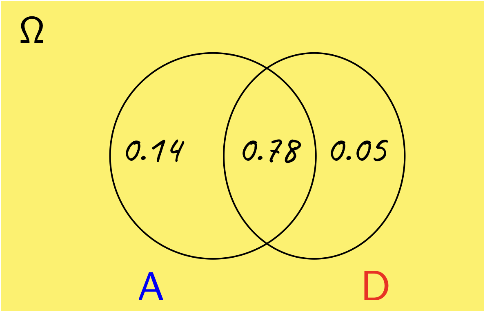
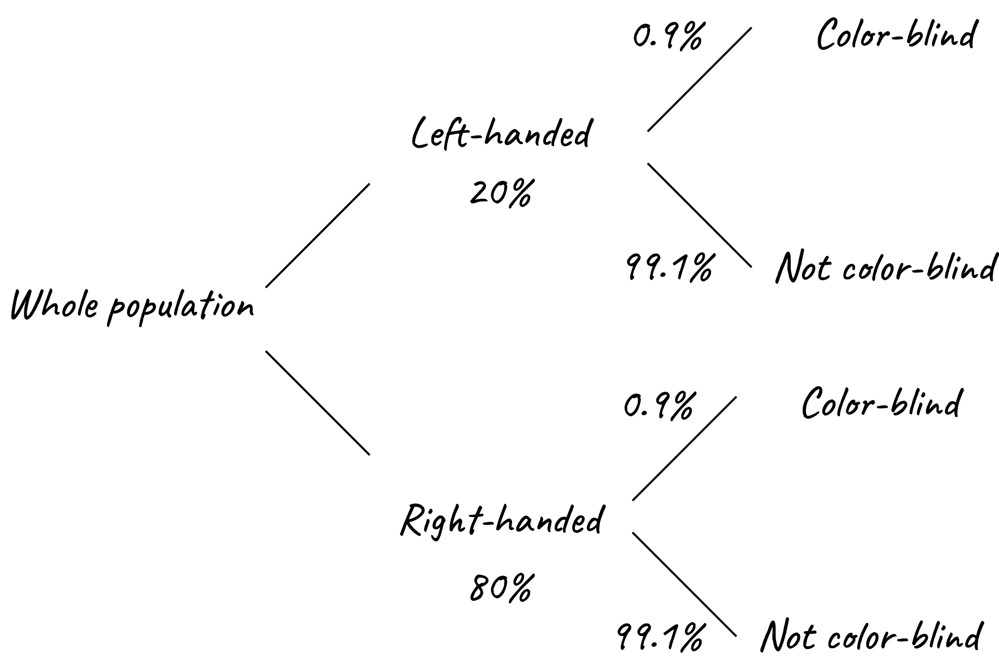

L1 examples
Problem 1
The probability that a scheduled flight departs on time is 0.83 and the probability that it arrives on time is 0.92. The probability that it both departs and arrives on time is 0.78. Find the probability that
the plane arrives on time given that it departed on time;
the plane did not depart on time given that it did not arrive on time.
Solution
It will be useful to consider the Venn diagram shown below.

Let \(\require{color}{\color[rgb]{0.000066,0.001801,0.998229}A}\) denote the event that the plane arrives on time, while \({\color[rgb]{0.986252,0.007236,0.027423}D}\) denotes th event that the plane departs on time. To construct the Venn diagram above note that \(P\left( {\color[rgb]{0.000066,0.001801,0.998229}A} \cap {\color[rgb]{0.986252,0.007236,0.027423}D} \right) = 0.78\). From the sum rule of probabilities, we have:
\[ \require{color} \large P\left( {\color[rgb]{0.000066,0.001801,0.998229}A} \right) = P \left( {\color[rgb]{0.000066,0.001801,0.998229}A} \cap \bar{{\color[rgb]{0.986252,0.007236,0.027423}D}} \right) + P \left( {\color[rgb]{0.000066,0.001801,0.998229}A} \cap {\color[rgb]{0.986252,0.007236,0.027423}D} \right) \]
\[ \require{color} \large 0.92= 0.78+ P \left( {\color[rgb]{0.000066,0.001801,0.998229}A} \cap {\color[rgb]{0.986252,0.007236,0.027423}D} \right) \]
which implies that \(\require{color} P \left( {\color[rgb]{0.000066,0.001801,0.998229}A} \cap {\color[rgb]{0.986252,0.007236,0.027423}D} \right) = 0.92 - 0.78 = 0.14\). Similarly, we have:
\[ \require{color} \large P \left( {\color[rgb]{0.986252,0.007236,0.027423}D} \right) = P \left( {\color[rgb]{0.986252,0.007236,0.027423}D} \cap \bar{{\color[rgb]{0.000066,0.001801,0.998229}A}} \right) + P \left( {\color[rgb]{0.000066,0.001801,0.998229}A} \cap {\color[rgb]{0.986252,0.007236,0.027423}D} \right) \]
\[ \require{color} \large \Rightarrow 0.83 = P \left( {\color[rgb]{0.986252,0.007236,0.027423}D} \cap \bar{{\color[rgb]{0.000066,0.001801,0.998229}A}} \right) + 0.78 \]
which implies that \(P \left( {\color[rgb]{0.986252,0.007236,0.027423}D} \cap \bar{{\color[rgb]{0.000066,0.001801,0.998229}A}} \right) = 0.05\). With these probabilities, we can now answer the questions.
- The plane arrives on time conditioned that it departed on time:
\[ \large \require{color} P \left( {\color[rgb]{0.000066,0.001801,0.998229}A} | {\color[rgb]{0.986252,0.007236,0.027423}D} \right) = \frac{P \left( {\color[rgb]{0.000066,0.001801,0.998229}A} \cap {\color[rgb]{0.986252,0.007236,0.027423}D} \right) }{P \left( {\color[rgb]{0.986252,0.007236,0.027423}D} \right) } = \frac{0.78}{0.83} = 0.94 \]
- The plane did not depart on time conditioned on it having not arrived on time:
\[ \large \require{color} P \left( \bar{{\color[rgb]{0.986252,0.007236,0.027423}D}} | \bar{{\color[rgb]{0.000066,0.001801,0.998229}A}} \right) = \frac{P \left( \bar{{\color[rgb]{0.986252,0.007236,0.027423}D } }\cap \bar{{\color[rgb]{0.000066,0.001801,0.998229}A}} \right) }{P \left( \bar{{\color[rgb]{0.000066,0.001801,0.998229}A}} \right) } \]
\[ \large \require{color} = \frac{1 - P\left( {\color[rgb]{0.000066,0.001801,0.998229}A} \right) - P \left( {\color[rgb]{0.986252,0.007236,0.027423}D} \right) + P \left( {\color[rgb]{0.000066,0.001801,0.998229}A} \cap {\color[rgb]{0.986252,0.007236,0.027423}D} \right) }{1 - P\left( {\color[rgb]{0.000066,0.001801,0.998229}A} \right) } = \frac{1 - 0.92 - 0.83 + 0.78}{1 - 0.92} = \frac{0.03}{0.08} = 0.375 \]
Problem 2
Toss a coin three times, what is the probability of at least two heads?
Solution
There are 8 possible outcomes which, if the coin is unbiased, should all be equally likely:
- HHH
- HHT
- HTH
- HTT
- THH
- THT
- TTH
- TTT
Two or more heads result from 4 outcomes. The probability of two or more heads is therefore \(4/8=1/2\).
Problem 3
This problem introduces the idea that whilst it may be tempting to add probabilities, the context is very important.
Around 0.9% of the population are blue-green color blind and roughly 1 in 5 is left-handed. Assuming these characteristics are inherited independently, calculate the probability that a person, chosen at random will:
- be both color-blind and left-handed
- be color-blind and not left-handed
- be color-blind or left-handed
- be neither color-blind nor left-handed
Solution
Consider the diagram shown below; given that the characteristics are inherited independently, each sub-branch of the population can be divided into color-blind and non-color-blind groups.

- the probability of being both color-blind and left-handed is: \(0.009 \times 0.2 = 0.0018\) or \(0.18 \%\).
- the probability of being color-blind and right-handed is: \(0.009 \times 0.8 = 0.0072\).
- this is the sum of all probabilities within the first branch and the probability calculated in the prior step, i.e., \(0.20 + 0.0072 = 0.2072\).
- this is given by the last group, i.e., \(0.991 \times 0.8 = 0.7928\).
Problem 4
This problem has two parts.
Derive Bayes’ rule.
The chance of an honest citizen lying is 1 in 1000. Assume that such a citizen is tested with a lie detector which correctly identifies both truth and false statements 95 times out of 100.
What is the probability that the lie detector indicates falsehood?
In this case, what is the probability that the person is actually lying?
Solution
- To derive Bayes’ rule, we will use the definition of the conditional probability, and the fact that \(p \left({\color[rgb]{0.986252,0.007236,0.027423}A} \cap {\color[rgb]{0.131302,0.999697,0.023594}B} \right) = p \left( {\color[rgb]{0.131302,0.999697,0.023594}B} \cap {\color[rgb]{0.986252,0.007236,0.027423}A} \right)\), which leads to
\[ \large \require{color} p \left( {\color[rgb]{0.986252,0.007236,0.027423}A} | {\color[rgb]{0.131302,0.999697,0.023594}B} \right) p \left( {\color[rgb]{0.131302,0.999697,0.023594}B} \right) = p \left( {\color[rgb]{0.131302,0.999697,0.023594}B}| {\color[rgb]{0.986252,0.007236,0.027423}A} \right) p \left({\color[rgb]{0.986252,0.007236,0.027423}A} \right) \]
From this one can write
\[ \large \require{color} p \left( {\color[rgb]{0.986252,0.007236,0.027423}A} | {\color[rgb]{0.131302,0.999697,0.023594}B} \right) = \frac{p \left( {\color[rgb]{0.131302,0.999697,0.023594}B} | {\color[rgb]{0.986252,0.007236,0.027423}A} \right) p \left( {\color[rgb]{0.986252,0.007236,0.027423}A} \right) }{p \left( {\color[rgb]{0.131302,0.999697,0.023594}B} \right) } \]
- The probability that the lie detector indicates a falsehood is based on (i) the citizen is lying, and (ii) the citizen is being honest, but the detector makes an error. Let \(F\) be the probability that the lie detector indicates a falsehood. Thus
\[ \large p \left( F \right) = \frac{1}{1000} \times 0.95 + \frac{999}{1000} \times 0.05 = 0.0509. \]
Let $p ( L ) be the probability that the person is actually lying. Thus, what we want is
\[ \large p \left( L | F \right) = \frac{p \left( F | L \right) p \left( L \right) }{p \left( F \right) } = \frac{0.95 \times 0.001}{0.0509} = 0.01866. \]